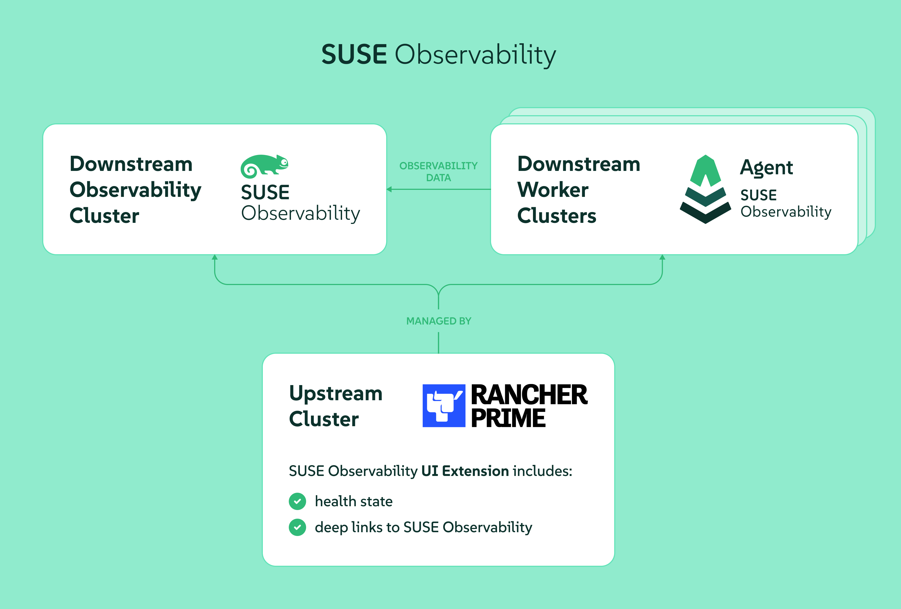

|
Este documento ha sido traducido utilizando tecnología de traducción automática. Si bien nos esforzamos por proporcionar traducciones precisas, no ofrecemos garantías sobre la integridad, precisión o confiabilidad del contenido traducido. En caso de discrepancia, la versión original en inglés prevalecerá y constituirá el texto autorizado. |
SUSE® Observability
Introducción
SUSE® Observability, anteriormente conocido como StackState, se puede utilizar para la observabilidad de tus clústeres de Kubernetes y sus cargas de trabajo.
La instalación de SUSE® Observability, la extensión de la interfaz de usuario SUSE® Observability y los Agentes SUSE® Observability tarda aproximadamente 30 minutos en total.
Cómo obtener ayuda
Para soporte, por favor, presenta un caso de soporte en SUSE Customer Center (SCC).
Requisitos previos
Clave de licencia
Se puede obtener una clave de licencia para el servidor SUSE® Observability a través del SUSE Customer Center en la pestaña de Suscripción y se mostrará como "SUSE® Observability" Código de Registro. Esta licencia es válida hasta el final de vuestra suscripción a Rancher Prime.
Requisitos
Para instalar SUSE® Observability, asegúrate de que el clúster tenga suficiente capacidad de CPU y memoria. A continuación se detallan los requisitos específicos.
Hay diferentes opciones de instalación disponibles para SUSE® Observability. Es posible instalar SUSE® Observability ya sea en una configuración de Alta Disponibilidad (HA) o en una instancia única (no-HA). Se recomienda la configuración no-HA para fines de prueba o entornos pequeños. Para entornos de producción, se recomienda instalar SUSE® Observability en una configuración de alta disponibilidad.
La configuración de producción de alta disponibilidad puede soportar de 150 hasta 4000 nodos observados. Un nodo observado en esta tabla de dimensionamiento se considera que tiene 4 vCPUs y 16GB de memoria, nuestro default node size.
Si los nodos en tu clúster observado son más grandes, pueden contar como múltiples default nodes, así que un nodo de 12vCPU y 48GB cuenta como 3 default nodes bajo observación al elegir un perfil.
La configuración no-HA puede soportar hasta 100 default nodes bajo observación.
La siguiente tabla describe los recursos necesarios para desplegar el servidor SUSE® Observability en un clúster, dado el número de default nodes que se observarán y si la instalación debe ser HA o no.
| prueba | 10 no-HA | 20 no-HA | 50 no-HA | 100 no-HA | 150 HA | 250 HA | 500 HA | 4000 HA | |
|---|---|---|---|---|---|---|---|---|---|
Solicitudes de CPU (núcleos) |
6.945 |
6.945 |
9.245 |
13.945 |
23.545 |
49.245 |
61.245 |
84.745 |
210.05 |
Límites de CPU (núcleos) |
15,02 |
15,02 |
19,32 |
28,72 |
47,87 |
104 |
127 |
175,38 |
278,95 |
Solicitudes de Memoria |
23180Mi |
23180Mi |
27056Mi |
31582Mi |
48088Mi |
129958Mi |
142426Mi |
161106Mi |
264330Mi |
Límites de Memoria |
23718Mi |
23718Mi |
27708Mi |
31614Mi |
48120Mi |
134762Mi |
147030Mi |
165910Mi |
327550Mi |
Almacenamiento |
153613Mi |
338957Mi |
379917Mi |
482317Mi |
533517Mi |
2654430Mi |
2756950Mi |
3678260Mi |
7159862Mi |
| Se requiere un 20% adicional de recursos para la distribución desigual de pods, el plano de control y las instalaciones de agentes. |
|
El requisito mostrado para el perfil representa la cantidad total de recursos necesarios para ejecutar el servidor SUSE® Observability. Para asegurar que todos los diferentes servicios del servidor de SUSE Observability puedan ser asignados:
|
|
Una configuración de prueba es una configuración no HA de 10 nodos configurada con una retención de 3 días y menores requisitos de espacio en disco. |
Estos son solo los límites superior e inferior de los recursos que puede consumir SUSE® Observability en las diferentes opciones de instalación. El uso real de recursos dependerá de las características utilizadas, los límites de recursos configurados y los patrones de uso dinámico, como el escalado de Deployment o DaemonSet. Para nuestros clientes de Rancher Prime, recomendamos comenzar con los requisitos predeterminados y monitorear el uso de recursos de los componentes SUSE® Observability.
|
Los requisitos mínimos no incluyen capacidad de CPU/Memoria adicional para asegurar actualizaciones continuas suaves de la aplicación. |
Almacenamiento
SUSE® Observability utiliza reclamaciones de volumen persistente para los servicios que necesitan almacenar datos. La clase de almacenamiento predeterminada para el clúster se utilizará para todos los servicios a menos que se anule mediante valores especificados en la línea de comandos o en un archivo values.yaml. Todos los servicios vienen con un tamaño de volumen preconfigurado que debería ser suficiente para empezar, pero se puede personalizar más tarde utilizando variables según sea necesario.
|
SUSE® Observability requiere que el almacenamiento subyacente esté basado en memoria flash (SSD) o similar en rendimiento. |
|
Para entornos de producción, no se recomienda ni se admite NFS para la provisión de almacenamiento en SUSE® Observability debido al riesgo potencial de corrupción de datos. |
Para nuestros diferentes perfiles de instalación, los siguientes son los requisitos de almacenamiento predeterminados:
| prueba | 10 no-HA | 20 no-HA | 50 no-HA | 100 no-HA | 150 HA | 250 HA | 500 HA | 4000 HA | |
|---|---|---|---|---|---|---|---|---|---|
Retención (días) |
3 |
30 |
30 |
30 |
30 |
30 |
30 |
30 |
30 |
Requisito de almacenamiento |
125GB |
280GB |
420GB |
420GB |
600GB |
2TB |
2TB |
2.5TB |
5.5TB |
Para más detalles sobre los valores predeterminados utilizados, consulta la página Configurar almacenamiento.
Helm
SUSE® Observability se instala a través de Helm, que debe instalarse con una versión mínima de 3.13.1.
Los diferentes componentes
SUSE® ObservabilityServidor
Esta es la parte del servidor alojado en las instalaciones. Contiene un conjunto de servicios para almacenar datos de observabilidad:
-
Topología (StackGraph)
-
Métricas (VictoriaMetrics)
-
Trazas (ClickHouse)
-
Registros (ElasticSearch)
Además de esto, contiene un conjunto de servicios para todas las tareas de observabilidad, por ejemplo, notificaciones, gestión de estado, monitorización, etc.
SUSE® Observability Agente
El ligero SUSE® Observability agente se instala en tus nodos de trabajo en sentido descendente. Recoge e informa métricas, eventos, rastros y registros, y proporciona observabilidad en tiempo real e información, permitiendo la monitorización proactiva y la resolución de problemas de tu entorno IT.
La versión SUSE® Observability del Agente también utiliza eBPF como una forma ligera de monitorizar todas tus cargas de trabajo y su comunicación. También decodifica las señales RED (Tasa, Errores y Duración) para la mayoría de los protocolos L7 comunes como TCP, HTTP, TLS, Redis, etc.
Rancher Prime - Extensión de la interfaz de usuario de Observabilidad
Esta es una extensión de la interfaz de usuario para Rancher Manager que integra las señales de salud observadas por SUSE® Observability. Proporciona acceso directo a la salud de cualquier recurso y un enlace a la UI de SUSE® Observability para una investigación más profunda.
Dónde instalar el servidor SUSE® Observability
El servidor SUSE® Observability debe instalarse en su propio clúster en sentido descendente destinado a la Observabilidad. Consulta la imagen de abajo como referencia.
Para que SUSE® Observability funcione correctamente necesita:
-
Almacenamiento Persistente de Kubernetes disponible en el clúster de observabilidad para almacenar métricas, eventos, etc.
-
el clúster de observabilidad debe soportar una forma de exponer SUSE® Observability en una URL HTTPS para Rancher, usuarios de SUSE® Observability y el agente SUSE® Observability. Esto se puede hacer a través de una configuración de Ingress utilizando un controlador de ingress, alternativamente un balanceador de carga (en la nube) para los SUSE® Observability servicios también podría hacerlo, para más información consulta la documentación de Rancher.

Preinstalación
Antes de instalar el servidor SUSE® Observability, se debe configurar una clase de almacenamiento predeterminada en el clúster donde se instalará el servidor SUSE® Observability:
-
Para k3s: La clase de almacenamiento local-path de tipo rancher.io/local-path se crea por defecto.
-
Para EKS, AKS, GKE se establece una clase de almacenamiento por defecto
-
Para controladores de nodo RKE2: No se crea ninguna clase de almacenamiento por defecto. Necesitarás crear una antes de instalar SUSE® Observability.
Instalación SUSE® Observability
|
Es importante saber Si creaste el clúster utilizando Rancher Manager y deseas ejecutar los comandos de aprovisionamiento a continuación desde una terminal local en lugar de en la terminal web, simplemente copia o descarga el kubeconfig desde el panel del clúster, consulta la imagen a continuación, y pégalo (o coloca el archivo descargado) en un archivo que puedas encontrar fácilmente, por ejemplo, ~/.kube/config-rancher y establece la variable de entorno KUBECONFIG=$HOME/.kube/config-rancher |

Después de cumplir con los requisitos previos, puedes proceder con la instalación. La instalación NO ESTÁ DISPONIBLE AÚN en la tienda de aplicaciones. En su lugar, puedes instalar SUSE® Observability a través de la shell de kubectl del clúster.
Ahora puedes seguir las instrucciones a continuación para una configuración HA o NO-HA.
|
Ten en cuenta que la actualización o degradación de HA a NO-HA y viceversa aún no está soportada. |
Instalación
-
Obtén el chart de Helm
helm_repo.shhelm repo add suse-observability https://charts.rancher.com/server-charts/prime/suse-observability helm repo update -
Crea la configuración y despliega
-
Método recomendado
-
Método legado (Obsoleto)
El método de configuración
global.suseObservabilityestá disponible a partir de la versión2.8.0. Para versiones anteriores, utiliza el método legado.Crea un archivo
values.yamlcon tu configuración:global: # Optional: Override image registry (defaults to registry.rancher.com) # Only needed for air-gapped environments or custom registries # imageRegistry: "your-private-registry.example.com" suseObservability: # Required: Your {stackstate-product-name} license key license: "YOUR-LICENSE-KEY" # Required: Base URL for {stackstate-product-name} baseUrl: "https://observability.example.com" # Required: Sizing profile # Available: trial, 10-nonha, 20-nonha, 50-nonha, 100-nonha, # 150-ha, 250-ha, 500-ha, 4000-ha sizing: profile: "150-ha" # Required: Plain text Admin password adminPassword: "your-password" # Instead of adminPassword you can provide a bcrypt hashed password with adminPasswordBcrypt # Generate with: htpasswd -bnBC 10 "" "your-password" | tr -d ':\n' # adminPasswordBcrypt: "$2a$10$..." # Optional: Receiver API key (auto-generated if not provided) # receiverApiKey: "your-receiver-api-key" # Optional: Affinity for pod scheduling (see affinity documentation) # affinity: # nodeAffinity: ... # podAntiAffinity: # requiredDuringSchedulingIgnoredDuringExecution: trueLa
baseUrldebe ser la URL a través de la cual SUSE® Observability será accesible para Rancher, los usuarios y el agente SUSE® Observability. La URL debe incluir el esquema, por ejemplohttps://observability.internal.mycompany.com. Consulta también accediendo a SUSE® Observability.La
sizing.profiledebe ser una de prueba, 10-nonha, 20-nonha, 50-nonha, 100-nonha, 150-ha, 250-ha, 500-ha, 4000-ha. Basado en este perfil, los recursos y la configuración se aplican automáticamente para el modo HA o no-HA. Actualmente, no es posible mover de un entorno no-HA a un entorno HA, así que si esperas que tu entorno requiera observar alrededor de 150 nodos, selecciona un perfil HA de inmediato.Despliega con un solo comando:
helm_deploy.shhelm upgrade --install \ --namespace suse-observability \ --create-namespace \ --values values.yaml \ suse-observability \ suse-observability/suse-observabilityAlternativamente, despliega directamente utilizando las banderas
--setsin un archivo de valores:helm upgrade --install \ --namespace suse-observability \ --create-namespace \ --set global.suseObservability.license="YOUR-LICENSE-KEY" \ --set global.suseObservability.baseUrl="https://observability.example.com" \ --set global.suseObservability.sizing.profile="150-ha" \ --set global.suseObservability.adminPassword='$2a$10$...' \ suse-observability \ suse-observability/suse-observabilityUsar una sola contraseña por defecto es excelente para comenzar con SUSE® Observability, pero para una configuración de producción opciones de autenticación más seguras están disponibles.
Para opciones de configuración de afinidad, consulta Configurar Afinidades de Kubernetes.
Este método está obsoleto. Para nuevas instalaciones, utiliza el método recomendado arriba. Para instalaciones existentes que utilizan este método, consulta la guía de migración para hacer la transición al nuevo formato de configuración.
Genera archivos de valores de helm chart:
helm_template.shexport VALUES_DIR=. helm template \ --set license='<your license>' \ --set baseUrl='<suse-observability-base-url>' \ --set rancherUrl='<rancher-prime-base-url>' \ --set sizing.profile='<sizing.profile>' \ suse-observability-values \ suse-observability/suse-observability-values --output-dir $VALUES_DIRLa
baseUrldebe ser la URL a través de la cual SUSE® Observability será accesible para Rancher, los usuarios y el agente SUSE® Observability. La URL debe incluir el esquema, por ejemplohttps://observability.internal.mycompany.com. Consulta también accediendo a SUSE® Observability.Para ver la información de salud en Rancher utilizando la extensión de la interfaz de usuario, establece el valor
rancherUrlen la URL de Rancher (para ser precisos, su origen).Este comando genera los archivos
$VALUES_DIR/suse-observability-values/templates/baseConfig_values.yaml,$VALUES_DIR/suse-observability-values/templates/sizing_values.yamly$VALUES_DIR/suse-observability-values/templates/affinity_values.yamlque contienen la configuración necesaria para instalar el Chart de Helm SUSE® Observability.La contraseña del administrador SUSE® Observability será generada automáticamente por el comando anterior y se mostrará como comentarios en el archivo
basicConfig.yamlgenerado. Para más información, consulta contraseña única. Los valores reales contienen los hashesbcryptde esas contraseñas para que estén almacenados de forma segura en la liberación de Helm en el clúster.Usar una sola contraseña por defecto es excelente para comenzar con SUSE® Observability, pero para una configuración de producción opciones de autenticación más seguras están disponibles.
Almacena los archivos generados
basicConfig.yaml,sizing_values.yamlyaffinity_values.yamlde forma segura. Puedes reutilizar estos archivos para actualizaciones, lo que ahorra tiempo y asegura que SUSE® Observability siga utilizando la misma clave API. Esto es deseable ya que significa que los Agentes y otros proveedores de datos para SUSE® Observability no necesitarán ser actualizados. Los archivos pueden ser regenerados independientemente utilizando los interruptoresbasicConfig.generate=falseysizing.generate=falsepara desactivar cualquiera de ellos mientras se mantiene la versión previamente generada del archivo en eloutput-dir.El gráfico de valores SUSE® Observability genera configuraciones de afinidad que puedes usar con el gráfico principal SUSE® Observability para controlar el comportamiento de programación de pods. Consulta Configurar Afinidades de Kubernetes para más información.
-
Configura SUSE® Observability para usar Rancher como proveedor OIDC.
Generate the `oidc_values.yaml`. This guide assumes that you save it in the `$VALUES_DIR`
$VALUES_DIR/oidc_values.yamlstackstate: authentication: rancher: clientId: "<oidc-client-id>" secret: "<oidc-secret>" baseUrl: "<rancher-url>"Este paso es necesario si planeas usar el RBAC de Rancher para limitar la visibilidad en los clústeres en sentido descendente. Para una explicación más detallada sobre cómo configurar SUSE® Observability para usar Rancher como proveedor OIDC, consulta Configurar SUSE® Observability para usar Rancher como proveedor OIDC.
-
Despliega el chart de Helm SUSE® Observability con los valores generados:
helm_deploy.shhelm upgrade --install \ --namespace suse-observability \ --create-namespace \ --values $VALUES_DIR/suse-observability-values/templates/baseConfig_values.yaml \ --values $VALUES_DIR/suse-observability-values/templates/sizing_values.yaml \ --values $VALUES_DIR/suse-observability-values/templates/affinity_values.yaml \ --values $VALUES_DIR/oidc_values.yaml \ suse-observability \ suse-observability/suse-observability -
Accediendo a SUSE® Observability
El chart de Helm SUSE® Observability tiene soporte para crear un recurso Ingress para hacer que SUSE® Observability sea accesible fuera del clúster. Sigue estas instrucciones para configurarlo cuando tengas un controlador de ingress en el clúster. Asegúrate de que la URL resultante utilice TLS con un certificado válido, no autofirmado.
Si prefieres usar un balanceador de carga en lugar de ingress, expón el servicio suse-observability-router. La URL para el balanceador de carga debe utilizar un certificado TLS válido, no autofirmado.
Instalando extensiones de UI
Para instalar extensiones de UI, habilita las extensiones de UI desde la interfaz de Rancher.

Después de habilitar las extensiones de UI, sigue estos pasos:
-
Navega a extensiones en la interfaz de Rancher y en la sección "Disponibles" de extensiones, encontrarás la extensión de Observabilidad.
-
Instala la extensión de Observabilidad.
-
Una vez instalada, en el panel izquierdo de la interfaz de Rancher, aparece la sección SUSE® Observability.
-
Navega a la sección SUSE® Observability y selecciona "configuraciones". En esta sección, puedes añadir los detalles del servidor SUSE® Observability y conectarlo.
-
Sigue las instrucciones mencionadas en la sección Obtener un token de servicio a continuación y completa los detalles.
Obtén un token de servicio:
-
Inicia sesión en la instancia SUSE® Observability.
-
Desde la esquina superior izquierda, selecciona CLI.
-
Anota el token de API e instala SUSE® Observability CLI en tu máquina local.
-
Crea un token de servicio ejecutando
sts service-token create --name suse-observability-extension --roles stackstate-k8s-troubleshooter
Instalación del SUSE® Observability Agente
-
En la interfaz de SUSE® Observability, abre el menú principal y selecciona StackPacks.
-
Selecciona el StackPack de Kubernetes.
-
Haz clic en nueva instancia y proporciona el nombre del clúster en sentido descendente que estás añadiendo. Asegúrate de que el nombre del clúster de Rancher coincida con el nombre proporcionado aquí. Haz clic en instalar.
-
En la lista de instrucciones, encuentra la sección que mejor se adapte a tu clúster.
-
Ejecuta las instrucciones proporcionadas para instalar el agente, estas se pueden ejecutar en el
kubectl shellque puedes abrir para tu clúster a través de la interfaz de Rancher. Pero también se puede ejecutar desde una máquina local si tiene Helm instalado y está autorizado para conectarse al clúster. -
Después de instalar el agente, el clúster se puede ver dentro de la interfaz de SUSE® Observability así como en la SUSE Rancher - Observability UI extensión.
Privilegios requeridos
La ampliación del agente SUSE® Observability requiere los siguientes privilegios del sistema:
-
hostPID: true: Este privilegio es necesario para asociar identificadores de procesos (PIDs) con sus grupos de control (cgroups) correspondientes. Esta asociación es esencial para mapear con precisión los procesos a sus respectivos contenedores. -
hostNetwork: true(Opcional): Por defecto, el agente de nodo se ejecuta conhostNetwork: truepara facilitar la recopilación de datos de métricas abiertas de todos los pods configurados en el nodo sin requerir políticas de red adicionales. Si está deshabilitado, se deben definir políticas de red apropiadas para garantizar que el agente pueda acceder a los puntos finales necesarios. -
securityContext.privileged: true: Este privilegio elevado es necesario para varias funciones críticas. Principalmente, permite al agente inyectar programas eBPF (filtro de paquetes de Berkeley extendido) en cada espacio de nombres de red con fines de monitoreo. También es necesario para leer las tablas de seguimiento de conexiones (conntrack) en todos los espacios de nombres de red. Si bien esta lista no es exhaustiva, el desarrollo futuro tiene como objetivo reemplazar este amplio privilegio por capacidades de Linux más granulares donde sea posible.
Además, el agente requiere que los sockets de entorno de ejecución de contenedor estén montados dentro de su pod. Esta configuración es esencial ya que facilita la comunicación directa con los demonios de entorno de ejecución de contenedor, lo cual es un requisito previo para recopilar métricas y metadatos de todos los contenedores en el sistema host.
Plantilla PSA Restringida de Rancher
La configuración de Rancher-restricted (Plantillas de Configuración de Admisión de Seguridad de Pods (PSA)) es una configuración altamente restrictiva que se alinea con las mejores prácticas actuales para asegurar pods.
Al ejecutar Rancher en un clúster de Kubernetes que aplica una política de seguridad restrictiva por defecto, hay dos formas de instalar el chart de Helm de SUSE Observability:
-
Eximir todo el espacio de nombres del chart, junto con otros espacios de nombres de Rancher requeridos.
-
Deshabilitar el contenedor de inicialización de Elasticsearch privilegiado configurando
elasticsearch.sysctlInitContainer.enabledafalse. Esto requiere que aumentes manualmente los ajustes de memoria virtual (vm.max_map_count) en los nodos. Ver también Permisos Requeridos de Elasticsearch.
Dado que el Agente de Observabilidad de SUSE debe ejecutarse en modo privilegiado, el enfoque recomendado es instalarlo en un espacio de nombres que planeas eximir de la política restrictiva.
|
Todos los contenedores del gráfico de Helm de Observabilidad de SUSE están configurados con los siguientes
|
Firma única
Para habilitar el inicio de sesión único con tu propio proveedor de autenticación, por favor consulta aquí.
Preguntas frecuentes y observaciones:
-
¿Es obligatorio instalar un agente SUSE® Observability antes de proceder a añadir la extensión de la interfaz de usuario?
-
No, esto no es obligatorio, la extensión de la interfaz de usuario se puede instalar de forma independiente.
-
-
¿Es obligatorio instalar SUSE® Observability Server antes de proceder con las extensiones de la interfaz de usuario?
-
Sí, esto es obligatorio ya que necesitas proporcionar un endpoint SUSE® Observability en la configuración.
-
-
¿Podemos instalar SUSE® Observability en un clúster local o en un clúster en sentido descendente?
-
Ambas opciones son posibles.
-
-
Para monitorizar los clústeres en sentido descendente, ¿deberíamos instalar el agente SUSE® Observability desde la tienda de aplicaciones o añadir una nueva instancia desde la interfaz de usuario de SUSE® Observability?
-
Ambas opciones son posibles dependiendo de la preferencia de los usuarios.
-
Problemas abiertos
-
Cuando desinstalas y reinstalas las extensiones de la interfaz de usuario para la Observabilidad, hemos notado que el token de servicio no se elimina y se reutiliza al reinstalar. Siempre que desinstalemos las extensiones, el token de servicio debe ser eliminado.
-
Esta información debe ser eliminada cuando se desinstalen las extensiones de la interfaz de usuario.
-
-
Después de que las extensiones estén instaladas, la interfaz de usuario de SUSE® Observability se abre en la misma pestaña que la interfaz de usuario de Rancher.
-
Puedes usar shift-click para abrir en una nueva pestaña, esto se convertirá en el comportamiento predeterminado.
-
-
Ten en cuenta que la actualización o degradación de HA a NO-HA y viceversa aún no está soportada.
Solución de problemas
Para cualquier consulta sobre la instalación de la extensión de la interfaz de usuario para la Observabilidad, consulta Guía de solución de problemas de la extensión.